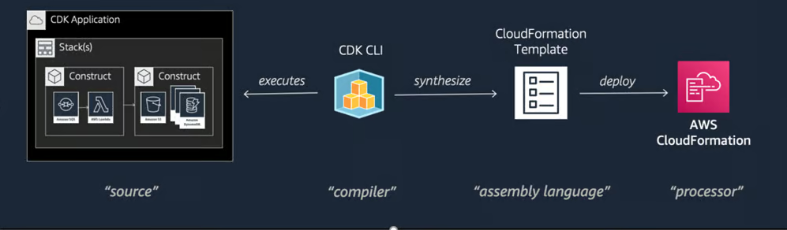

Serverless Stack Toolkit (SST) is a framework that makes it easy to build serverless apps on AWS.
Serverless means you don't have to worry about managing servers, databases, or scaling.
Amazon Web Services (AWS) provides on-demand cloud computing platforms and APIs on a metered pay-as-you-go basis.
AWS contains 200+ services.
SST uses AWS CDK (Cloud Development Kit) to define your infrastructure as code.
AWS Amplify is a set of tools that enables mobile and web developers to build full stack applications.
In practice quite slow and cumbersome to use for local cloud development.
Shall improve soon with Amplify v2 going into the same direction as the SST.
AWS ecosystem is complex with huge amount of configuration, that is evolving constantly.
TypeScript provides a full typings with all the options speeding up development and preventing errors.
CDK is a framework for defining cloud infrastructure in code and provisioning it through AWS CloudFormation.
CDK Supports all the AWS services.
SST is built on top of the AWS CDK (Cloud development kit), which means you can use all the CDK constructs and patterns in your SST apps.
Allows you to debug and test your Lambda functions locally, while being invoked remotely by resources in AWS.
Works by proxying requests from your AWS account to your local machine.
Supports Lambda triggers as SQS, SNS and IAM Permissions. No need to mock these services.
SST Console provides a real-time view of your app's resources and logs.
SST Console is deployed in your own AWS account and is accessible from your browser.
No need to use AWS CloudWatch
Deploy your app with a single command. SST will build your app, deploy it to AWS.
sst deploy --stage staging
You can also deploy your app to multiple environments (e.g. dev, staging, prod) or preview environment for PRs.
SST ION - new engine for deploying SST app
Uses Terraform and Pulumi instead of CDK and CloudFormation
10x faster without the limitation of current architecture
npx create-serverless-stack@latest my-sst-appGenerates a new SST project with monorepo setup
import { StaticSite } from "sst/constructs";
export function HostingStack({ stack }) {
const site = new StaticSite(stack, "Site", {
path: "frontend/dist",
customDomain: {
domainName: "my-app.com",
domainAlias: "www.my-app.com",
},
});
return { site };
}
import { Cron } from "sst/constructs";
export function CronStack({ stack }) {
const cleanupCron = new Cron(stack, "cleanup", {
schedule: "rate(1 minute)",
job: "functions/cleanup.main"
});
return { cleanupCron };
};
import { Table } from "sst/constructs";
export function StorageStack({ stack }) {
// DynamoDB table
const userTable = new Table(stack, "Users", {
fields: {
id: "string",
name: "string",
email: "string",
},
primaryIndex: { partitionKey: "id", sortKey: "email" },
});
return {
userTable,
};
}
import { aws_appsync } from "aws-cdk-lib";
import { Api, AppSyncApi, Function, StackContext, use } from "sst/constructs";
import { ConfigStack } from "./ConfigStack";
export function MobileStack({ stack }) {
const configStack = use(ConfigStack);
const appSync = new AppSyncApi(stack, "appsync-api", {
cdk: {
graphqlApi: aws_appsync.GraphqlApi.fromGraphqlApiAttributes(
stack,
"existing-mobile-api",
{
graphqlApiId: configStack.ENV.APPSYNC_ID,
},
),
},
});
const heartbeatLambda = new Function(stack, "heartbeat", {
handler: "packages/functions/src/heartbeat.handler",
});
const api = new Api(stack, "driver-api", {
routes: {
"POST /heartbeat": {
function: heartbeatLambda,
},
}
});
return { appSync };
}
export default {
config() {
return {
name: "my-sst-app",
region: "us-east-1",
};
},
stacks(app) {
app.setDefaultFunctionProps({
runtime: "nodejs18.x",
nodejs: {
format: "esm",
},
architecture: "arm_64",
});
app
.stack(StorageStack)
.stack(HostingStack)
.stack(CronStack)
.stack(ConfigStack)
.stack(MobileStack);
},
}